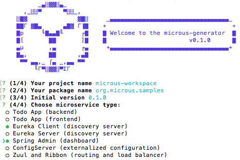
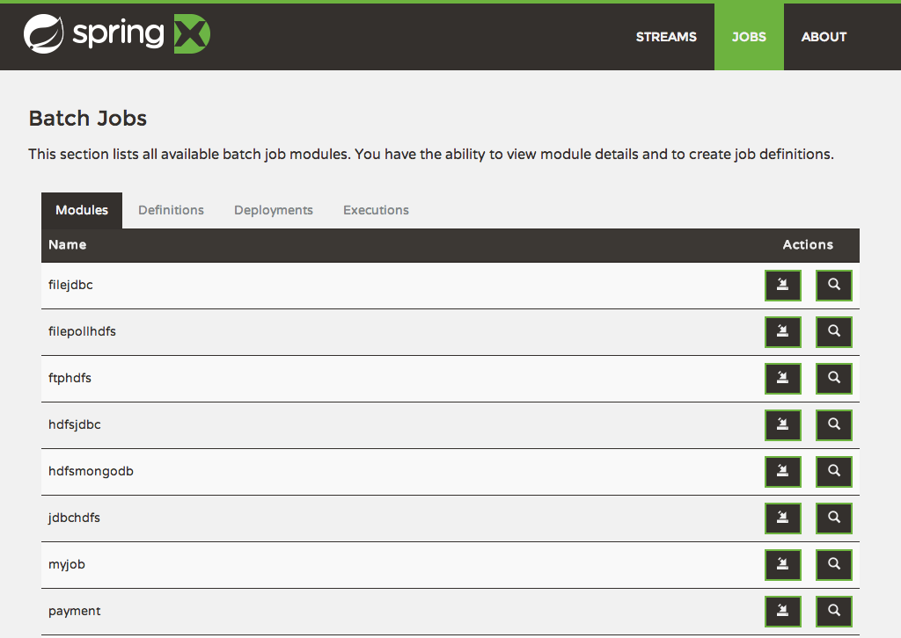
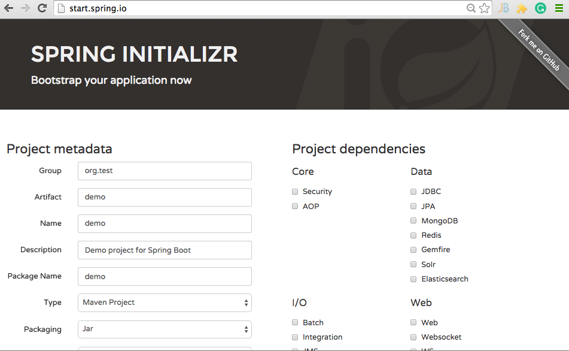

Spring Boot/Cloud
Microservices made easy with Spring Boot and Spring Cloud. Using part of Netflix OSS we aggregate some of components related to manage microservices: discovery, load balancer, router, etc.
Docker
Build, ship and run microservices, no matter where these microservices are, on-premise or cloud, just do your business go on.
yeoman
All these stuff together generated by yeoman. Just plug and plug and...you create a app based on microservices!
Install
First thing is to install yo using npm
npm install -g yo
Then install the microus generator. If you get in trouble, yeoman provides a getting started guide to install and use its generator.
npm install -g generator-microusBasic usage
It is time to create our project, supposes you want to create a 'myapp' project. From an empty 'myapp', let's create a basic project.
yo microusYou will be asked some questions.

There is an advanced mode, you can create each peace at your flavor: Eureka, Zuul, OAuthServer, Swagger, Docker (AWS and on-premise)...all stuff as a microservice and as you want. Please read the full documentation for advanced scaffolding.
Run
Just it! Run the following commands to build your project and go on, use it! Your application will be available on this link: http://localhost:8777
To run all components using docker, read this documentation about configuring docker.
./gradlew clean build./microusw run
Screenshots

